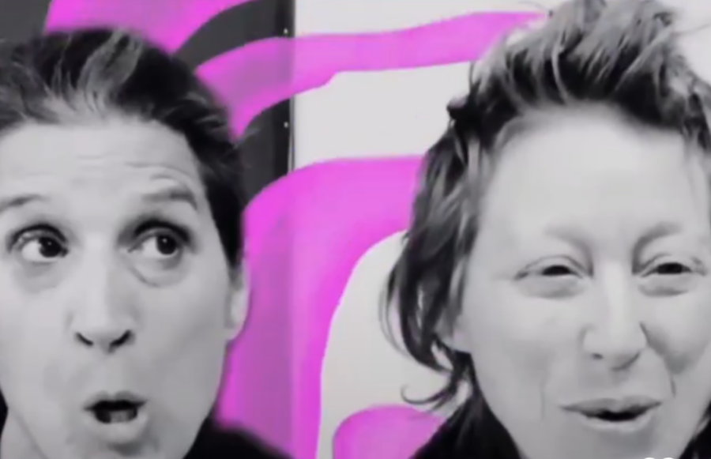

Mooove Voice
Mooove Voice combines classical vocal techniques with fundamental Butoh exercises, exploring the physical sensations of vocal sounds in our bodies and in the space around us. We work up to group improvisational scores by playfully passing sound and movement in simple patterns. No experience necessary, all are welcome!
RSVP now to ensure a spot at the next Mooove Voice. Walk-ins are encouraged as well! If we are at capacity, you will be added to the first spot in the next workshop: https://romansusan.org/Mooove-Voice-RSVP
Led by:
Elaine Lemieux, mezzo-soprano, received Master’s and Post-Master’s degrees in Music Interpretation in Voice from the University of Montreal, Québec. Elaine has been teaching singing for more than 20 years. As a music lover and voice teacher, she feels that her responsibilities are to help young children, teenagers and adults to discover their vocal and singing abilities in a natural and healthy manner. She is the founder of VOIX-DE-VIVRE.
Sharkey Zalek (@00sharkey) is a transdisciplinary artist, producer, and curator. Rooted in physical investigations of trauma, resilience, and transformation, their work is intimate, raw, poetic. They make performances into learning situations, workshops, and sensing environments to encourage thoughtful interpersonal connections. They have performed and curated performances at the Chicago Cultural Center, High Concept Labs, Elastic Arts, Experimental Sound Studio, Links Hall, Lumpen Radio, dfbrl8r, Urban Guild in Kyoto, Japan, and so many more.
Mooove Voice is being shared as part of Movement Studies – a programming series investigating social and environmental transitions. This project is partially supported by grants from the Illinois Arts Council Agency; Gaylord and Dorothy Donnelley Foundation; Reva and David Logan Foundation; Teiger Foundation; and through in-kind support from Chicago Park District.